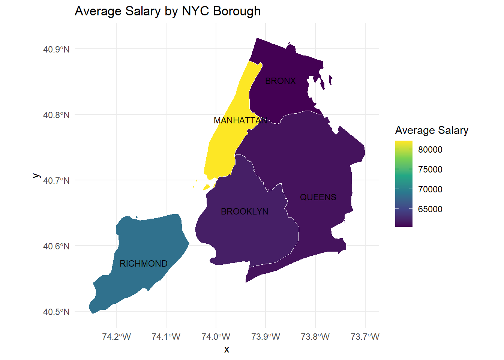
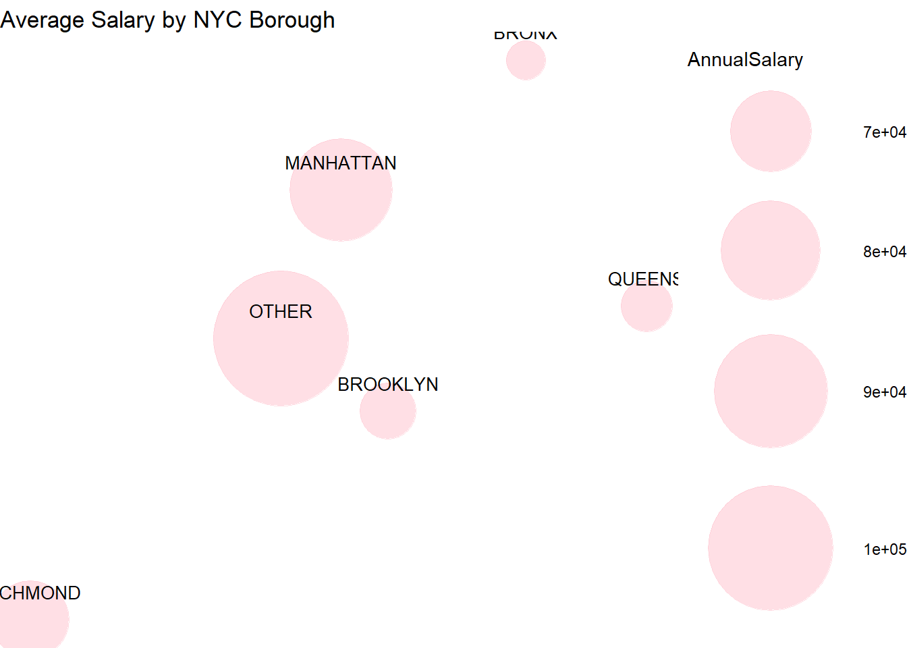

summary(cars) speed dist
Min. : 4.0 Min. : 2.00
1st Qu.:12.0 1st Qu.: 26.00
Median :15.0 Median : 36.00
Mean :15.4 Mean : 42.98
3rd Qu.:19.0 3rd Qu.: 56.00
Max. :25.0 Max. :120.00 This is an R Markdown document. Markdown is a simple formatting syntax for authoring HTML, PDF, and MS Word documents. For more details on using R Markdown see http://rmarkdown.rstudio.com.
When you click the Knit button a document will be generated that includes both content as well as the output of any embedded R code chunks within the document. You can embed an R code chunk like this:
summary(cars) speed dist
Min. : 4.0 Min. : 2.00
1st Qu.:12.0 1st Qu.: 26.00
Median :15.0 Median : 36.00
Mean :15.4 Mean : 42.98
3rd Qu.:19.0 3rd Qu.: 56.00
Max. :25.0 Max. :120.00 You can also embed plots, for example:

Note that the echo = FALSE parameter was added to the code chunk to prevent printing of the R code that generated the plot.
library(tidyverse)── Attaching core tidyverse packages ──────────────────────── tidyverse 2.0.0 ──
✔ dplyr 1.1.3 ✔ readr 2.1.4
✔ forcats 1.0.0 ✔ stringr 1.5.0
✔ ggplot2 3.4.4 ✔ tibble 3.2.1
✔ lubridate 1.9.2 ✔ tidyr 1.3.0
✔ purrr 1.0.2
── Conflicts ────────────────────────────────────────── tidyverse_conflicts() ──
✖ dplyr::filter() masks stats::filter()
✖ dplyr::lag() masks stats::lag()
ℹ Use the conflicted package (<http://conflicted.r-lib.org/>) to force all conflicts to become errorssalary_df <- read.csv("Cleaned Dataset.csv")select_agency <- salary_df |>
filter(Agency.Name == c('DEPT OF ED PEDAGOGICAL','POLICE DEPARTMENT',
'FIRE DEPARTMENT',
'HRA/DEPT OF SOCIAL SERVICES',
'NYC HOUSING AUTHORITY',
'DEPARTMENT OF SANITATION',
"ADMIN FOR CHILDREN'S SVCS",
'DEPARTMENT OF FINANCE',
'DEPT OF INFO TECH & TELECOMM',
'TAXI & LIMOUSINE COMMISSION'))select_title <- select_agency |>
filter(Title.Description %in% c("CHILD PROTECTIVE SPECIALIST",
"CHILD PROTECTIVE SPECIALIST SUPERVISOR",
"CITY TAX AUDITOR",
"CLERICAL ASSOCIATE",
"CALL CENTER REPRESENTATIVE",
"COMPUTER SPECIALIST",
"TAXI AND LIMOUSINE INSPECTOR",
"COMMUNITY ASSOCIATE",
"TEACHER",
"TEACHER SPECIAL EDUCATION",
"POLICE OFFICER",
"SCHOOL SAFETY AGENT",
"FIREFIGHTER",
"EMERGENCY MEDICAL SPECIALIST-EMT",
"ELIGIBILITY SPECIALIST",
"JOB OPPORTUNITY SPECIALIST",
"CARETAKER",
"MAINTENANCE WORKER",
"SANITATION WORKER",
"CITY SEASONAL AIDE"))library(dplyr)
df <- select_title |>
mutate(AnnualSalary = case_when(
Pay.Basis == "per Annum" ~ 1,
Pay.Basis == "per Day" ~ 260,
Pay.Basis == "per Hour" ~ 260 * 8,
Pay.Basis == "Prorated Annual" ~ 1
))
salary_new <- df |>
mutate(AnnualSalary = AnnualSalary * Base.Salary)
fivenum(salary_new$AnnualSalary)[1] 6461 58692 80788 95105 143858# 6461 58692 80788 95105 143858
salary_new <- salary_new |>
mutate(SalaryLevel = case_when(
AnnualSalary >= 6461 & AnnualSalary <= 58692 ~ "LOW",
AnnualSalary > 58692 & AnnualSalary <= 80788 ~ "MOD",
AnnualSalary > 80788 & AnnualSalary <= 95105 ~ "HIGH",
AnnualSalary > 95105 & AnnualSalary <= 143858 ~ "VHIGH"))salary_new$Agency.Start.Date <- trimws(salary_new$Agency.Start.Date)
salary_new$Agency.Start.Date <- as.Date(salary_new$Agency.Start.Date, format="%m/%d/%Y")
salary_new$CorrentDate <- as.Date("2023-12-01")
salary_new$Agency.Start.Date[salary_new$Agency.Start.Date == as.Date("9999-12-31")] <- as.Date("1999-12-31")
salary_new$days_difference <- as.Date(salary_new$CorrentDate) - as.Date(salary_new$Agency.Start.Date)
salary_new$days_difference <- as.numeric(salary_new$days_difference)salary_new$OT.Hours[salary_new$OT.Hours<0]<-0
salary_new$Regular.Hours[salary_new$Regular.Hours<0]<-0
salary_new$pay_per_hour<-salary_new$Total.OT.Paid/salary_new$OT.Hours
salary_new$pay_per_hour[is.infinite(salary_new$pay_per_hour)| is.na(salary_new$pay_per_hour) |salary_new$pay_per_hour<0] <- 0
salary_new$job_type <- ifelse(as.numeric(salary_new$Regular.Hours) <= 1000 & as.numeric(salary_new$Regular.Hours) > 0, "part_time", "full_time")
agency_size <- as.data.frame(table(salary_new$Agency.Name))
colnames(agency_size) <- c("Agency.Name", "Agency.Size")
salary <- left_join(salary_new, agency_size, by = join_by(Agency.Name))count_by_columnB <- salary %>%
group_by(job_type) %>%
summarise(Count = n())
print(count_by_columnB)# A tibble: 2 × 2
job_type Count
<chr> <int>
1 full_time 137162
2 part_time 6219library(sf)
library(tigris)
options(tigris_use_cache = TRUE)
options(tigris_class = "sf")
nyc_counties <- tigris::counties(state = "NY", cb = TRUE) %>%
filter(COUNTYFP %in% c("005", "047", "061", "081", "085")) # FIPS codes for NYC boroughs
suppressMessages(nyc_counties)Simple feature collection with 5 features and 12 fields
Geometry type: MULTIPOLYGON
Dimension: XY
Bounding box: xmin: -74.25609 ymin: 40.4961 xmax: -73.70036 ymax: 40.91771
Geodetic CRS: NAD83
STATEFP COUNTYFP COUNTYNS AFFGEOID GEOID NAME NAMELSAD
1 36 061 00974129 0500000US36061 36061 New York New York County
2 36 081 00974139 0500000US36081 36081 Queens Queens County
3 36 047 00974122 0500000US36047 36047 Kings Kings County
4 36 085 00974141 0500000US36085 36085 Richmond Richmond County
5 36 005 00974101 0500000US36005 36005 Bronx Bronx County
STUSPS STATE_NAME LSAD ALAND AWATER geometry
1 NY New York 06 58683562 29010735 MULTIPOLYGON (((-73.9995 40...
2 NY New York 06 281594049 188444349 MULTIPOLYGON (((-73.96262 4...
3 NY New York 06 179684484 71158757 MULTIPOLYGON (((-74.04201 4...
4 NY New York 06 148982680 117441533 MULTIPOLYGON (((-74.1617 40...
5 NY New York 06 109233466 39353304 MULTIPOLYGON (((-73.77336 4...nyc_counties$BoroName <- factor(nyc_counties$NAME,
levels = c("Bronx", "Kings", "New York", "Queens", "Richmond"),
labels = c("BRONX", "BROOKLYN", "MANHATTAN", "QUEENS", "RICHMOND"))
ave_salary <- salary %>%
group_by(Work.Location.Borough) %>%
summarize(Average_salary = mean(AnnualSalary, na.rm = TRUE))
salary_map <- merge(nyc_counties, ave_salary, by.x = "BoroName", by.y = "Work.Location.Borough")
# Create the map visualization
ggplot(data = salary_map) +
geom_sf(aes(fill = Average_salary), color = "white", size = 0.5) +
geom_sf_text(aes(label = BoroName), size = 3, check_overlap = TRUE) +
scale_fill_viridis_c(name = "Average Salary") +
labs(title = "Average Salary by NYC Borough") +
theme_minimal()
df_aggregated <- aggregate(AnnualSalary ~ Work.Location.Borough, data = salary, mean)
coordinates <- data.frame(
Work.Location.Borough = c("MANHATTAN", "BROOKLYN", "BRONX", "QUEENS", "RICHMOND", "OTHER"),
x = c(-73.9712, -73.9442, -73.8648, -73.7949, -74.1502, -74.0060), # Longitude
y = c(40.7831, 40.6782, 40.8448, 40.7282, 40.5795, 40.7128) # Latitude
)
df_merged <- merge(df_aggregated, coordinates, by = "Work.Location.Borough")
ggplot(df_merged, aes(x = x, y = y, size = AnnualSalary)) +
geom_point(alpha = 0.5, color = "pink") +
geom_text(aes(label = Work.Location.Borough), vjust = -1.5, size = 3.5) + # Place text above the circles
scale_size(range = c(10, 35)) +
theme_void() +
labs(title = "Average Salary by NYC Borough")